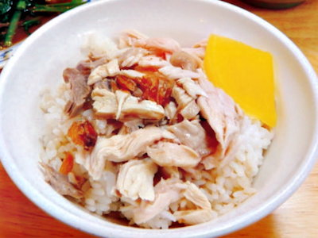

雞肉飯
嘉義火雞肉飯全台知名，據說是由噴水雞肉飯的始祖林添壽所創。
因為從前窮困，只有逢年過節才有雞肉吃。所以林添壽將切片的火雞肉放在白飯上，再淋上肉燥，成為最原始的雞肉飯雛形。而之所以選擇火雞肉，是因為火雞便宜、可以降低成本，而且它的肉質較粗並有彈性，咀嚼起來味道更佳。
雞肉飯上面鋪滿了大大小小的火雞肉絲，還有少許的雞皮，火雞肉和飯之間又灑上酥脆香甜的蔥油酥，被雞油浸潤過的雞肉絲鮮嫩發光，光視覺上就是一種享受。一口吃下，鮮嫩多汁不老柴的火雞肉絲透露著淡淡的清香，老闆特地選用的壽司米粒粒分明不黏稠，吃起來Ｑ勁十足。而蔥油酥又在米飯和雞肉絲外提供了第三種口感，實在是相當棒！
老闆的特調獨門醬汁口味甜鹹適中，稍稍偏甜的口感剛好可以替整碗加了雞油的白飯去油解膩，這樣的搭配實在是無與倫比。
